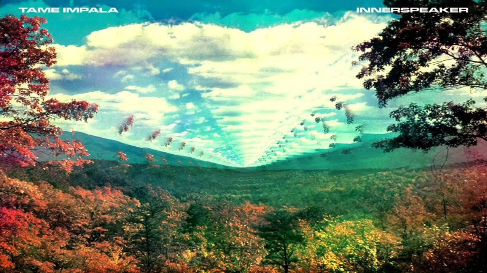

El albúm Innerspeaker ganó atención por su refrescante tratamiento de los códigos del rock. Pero ese lugar de punta de lanza del revival pscodélico no pareció acomodar a su creador. En realidad, se trató de una aproximación personal a una era que aportó la expansión como lema, pero que el de Australia dotó de una vitalidad propia merced a una inquietud constante por el sonido.
